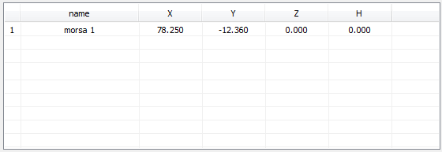

Nell’albero delle Funzioni, fare doppio clic su “Assi”;
fare doppio clic su “Altre posizioni iniziali”;

Si accede ad una lista nella quale possono essere memorizzate delle posizioni iniziali XYZ aggiuntive, ognuna associata ad un valore di spessore materiale H e individuata da un testo.
Per modificare una posizione:
fare doppio clic sulla posizione name o XYZH da modificare.
fare clic sul pulsante per acquisire dal CN la posizione corrente degli assi XY;
fare clic sul pulsante per aggiungere una nuova riga alla lista;
fare clic sul pulsante per eliminare dalla lista la riga selezionata;
fare clic sul pulsante per inviare al CN la posizione iniziale selezionata; IMPORTANTE: un valore nullo non viene inviato!


 per acquisire dal CN la posizione corrente degli assi XY;
per acquisire dal CN la posizione corrente degli assi XY;